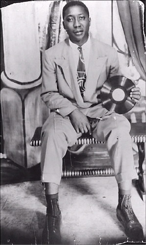

|
Из книги "Can't Be Satisfied: The Life and Times of Muddy Waters" by Robert Gordon.
Слух достиг Мадди раньше, чем появился сам белый человек. "Ну вот, - подумал Мадди, - все-таки они пронюхали, что я продаю виски". Мадди отправился в разведку на нейтральную территорию - в магазинчик на плантации, подальше от своего дома, где было припрятано паленое виски. Там его и встретил белый. "Я туда вошел, я сказал "Йессер?"(Yassuh?). Он ответил: "Ты тут не йессерься со мной. Отвечай мне просто "да" или "нет". Он сказал: "Я тебя искал". Я ответил: "Для чего?" - "Я хочу, чтобы ты что-нибудь сыграл для меня. Где там у тебя гитара?" Я сказал: "Она у меня там, дома" - "Давай, достань ее. Я хочу, чтобы ты мне сыграл". Белого звали Алан Ломакс. Ему было 26 лет. Мадди было 28. "Когда он приехал туда в первый раз, я никак не мог разобрать, в чем, собственно, дело, - рассказывает Мадди. - Он мог быть одним из полицейских умников, приехавшим прищучить меня, или вообще, что за фигня происходит. Я не знал, как понимать, что белый готов посадить меня в свою машину и прокатиться со мной домой. Я сказал себе: "Ага, агенты решили меня прижать". Понять, кто такой этот Ломакс, было действительно непросто. У него был странный акцент - техасский, но уже облагороженный Вашингтоном. И у него были странные манеры. Он попросил у Мадди воды и потом поразил миссиссиппианина тем, что разделил с ним эту воду. "Он тоже выпил из той же чашки, из которой пил я. Я подумал: "Никакой белый так не сделал бы! Нет-нет, это уже слишком, он заходит слишком далеко. Но в голове у меня все еще сидело: "Да он пойдет на все, чтобы попробовать меня расколоть". За спиной Ломакса нависал, сопровождая, но держась на расстоянии вытянутой руки, тот человек, который и задумал эту историческую экспедицию, Джон Уорк III (John Work III), черный человек. Уорк по большей части молчал. На дальнем Юге его бы сочли кем-то вроде подручного Ломакса, не более. И Ломакс не особо старался опровергнуть это положение. Присутствие Уорка еще более усилили подозрения Мадди, как и отсутствие Капитана Холта, надсмотрщика плантации Стоуэлла. Плантаторы не приветствовали разного рода "агитаторов" на своих землях, и любой неместный, или кто точно не был агитатором, здесь обычно не появлялся, если у него не было на то особых объяснений. Все те же слухи о приезде белого, которые насторожили Мадди, сначала должны были дойти до Капитана Холта. Мадди здесь любили и такие же фермеры-арендаторы, как он сам, и вся семья Стоуэллов. Когда прежде появлялись какие-то правительственные агенты, Полковник Стоуэлл лично приходил предупредить Мадди. Если его упекут за решетку, Стоуэллы потеряют не только одного из своих бутлегеров, но и своего самого популярного музыканта. Отсутствие Холта могло означать только то, что приезд чиновников был одобрен, и Мадди решил, что ферма пожертвовала его правительству как пешку, встрявшую меж королями. Но он был странным, этот агент, этот белый. Вместо того, чтобы вытащить свой значок, Ломакс отправился к своей машине, вытащил гитару Martin и начал наигрывать блюз. И Мадди теперь мог разглядеть, что заднее сиденье и весь багажный отсек автомобиля занимала звукозаписывающая машина, нарезатель дисков и генератор, переводивший постоянный ток аккумулятора автомобиля в переменный. Записывающее устройство так же могло воспроизводить звук, что позволяло Ломаксу поделиться тем, что он услышал и записал, и потом уж забрать добычу с собой.  "Он притащил свою машину, - рассказывал Мадди, - и взял свою старую гитару, и он начал играть, и он сказал: "… Я слышал, что Роберт Джонсон мертв, и я слышал, что ты так же хорош, как был он, и я хочу, чтобы ты кое-что для меня сделал. Не позволишь записать несколько твоих песен, и я потом включу запись, чтобы и ты мог их послушать? Я хочу отвезти их в Библиотеку Конгресса". Я понятия не имел, что он называет "Библиотекой Конгресса". Но постепенно становилось ясно: незнакомец интересуется музыкой, а не тайником с виски. Слухи о происходящем быстро добрались до Сана Симза, музыкального товарища Мадди, и, вместо того, чтобы держаться подальше, он поспешил к Мадди домой, прихватив свою гитару."Мы вытащили все оборудование из его машины, рассказывал Мадди. - все его электробатареи, и установили на моем крыльце. Сам я сидел в передней с моей гитарой и его микрофончиком: а он заземлил провод через окно, и начал работать". Дисками служили толстые стеклянные пластины ( во время Второй мировой войны металл использовался только в военных нуждах), покрытые солью уксусной кислоты, в которой резак прокладывал борозды - так записывался звук через микрофон. Диски были диаметром в 16 дюймов (40,64 см), стандарт размеров LP составлял 12 дюймов (30,5 см), а диски с записью на 78 об/мин. Были 10 дюймов (25,4 см) в диаметре - так что эти диски были совсем не похожи на музыкальные пластинки, которые Мадди видел в музыкальном автомате в магазине. Их внушительные размеры как бы подчеркивали важность события. Товарищество было заключено, подозрения отброшены и был поднят тост. Виски подогревало всем нутро, началась первая в жизни Мадди сессия звукозаписи. "так вот я начал и спел этот "Кантри-блюз" (Country Blues) - рассказывал Мадди, - Когда он включилзапись на воспроизведение, я звучал не хуже, чем пластинки у других. Перень, тебе не понять, что я чувствовал в тот полдень, когда я услышал этот голос- и это был мой голос! Я подумал: "Да я могу петь!" Позже он мне прислал две копии пластинки и чек на 20 долларов, и я отнес эту пластинку в музыкальный автомат. Я ее запускал снова и снова, и повторял: "Я так могу, я так могу". Другие материалы о Мадди Уотерсе на Blues.Ru. |